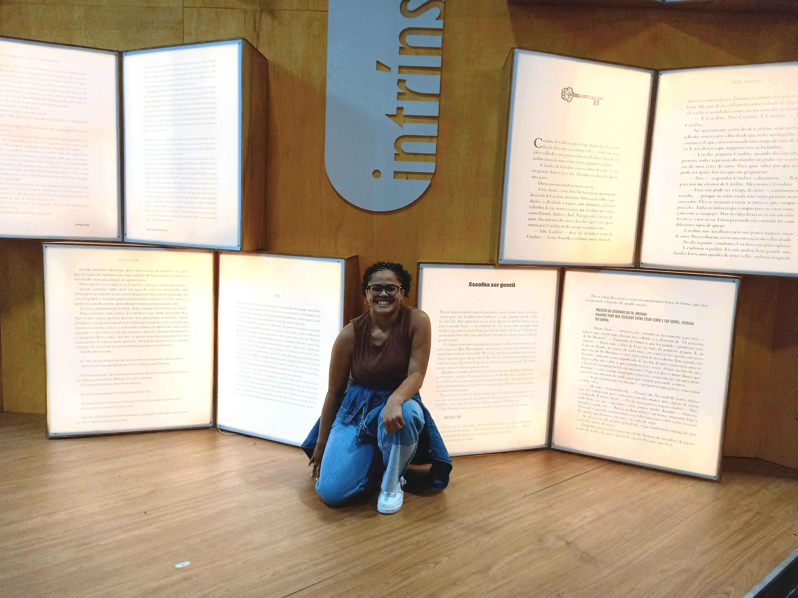
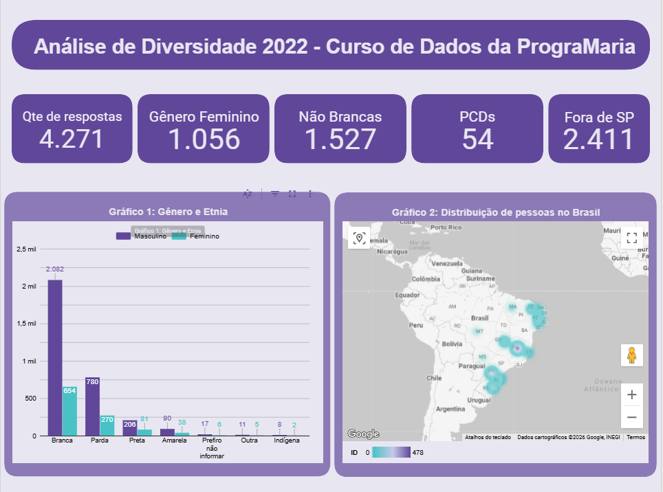

Joyce Sarmento de Lima
Estudante de Tecnologia da Informação
Olá! Meu nome é Joyce, tenho 27 anos e sou estudante de Tecnologia da Informação. Sou apaixonada por tecnologia e estou sempre em busca de aprender mais sobre o mundo da programação e desenvolvimento de software. Atualmente, estou cursando o Bacharelado em Tecnologia da Informação na Universidade Virtual do Estado de São Paulo (Univesp). Além disso, tenho grande interesse em áreas como desenvolvimento web e inteligência artificial.
Sou da primeira geração da minha família a ter acesso ao Ensino Superior, e acredito que esse fato é o que mais me motiva a continuar sempre estudando e buscando coisas novas! Sou apaixonada pelo mundo dos livros, então sempre que você me encontrar, posso garantir que estarei com meu Kindle (meu fiel escudeiro), um livro físico ou até mesmo lendo pelo celular.
Entre meus outros hobbies estão os trabalhos manuais: crochê, tricô, bordado e trabalhos com miçangas. Esses hobbies me acompanham desde a infância, quando vivia fazendo cursos de trabalhos manuais depois da escola. Eles me ajudaram a desenvolver habilidades como paciência, criatividade, constância e raciocínio.
Nos meus tempos livres, assistir séries, filmes (principalmente musicais, romance e animações), passar tempo com a família e ouvir música. Entre meus artistas favoritos estão: Beyoncé, One Direction e Of Monsters and Men.

Formação
Cursando - Bacharelado em Tecnologia da Informação
Universidade Virtual do Estado de São PauloCurso de graduação em Tecnologia da Informação, com foco em desenvolvimento de soluções que envolvem software, web, nuvem e mobile. Previsão de conclusão: 2027.
Ensino Médio
Fundação BradescoConclui o Ensino Médio no ano de 2015, na Fundação Bradesco. Onde tive um ensino que vai além do quesito conteudista, nela tive ensinos de como me tornar uma cidadã e contribuir com a sociedade.
Cursos
Projetos

Análise de Diversidade no Mercado Tech (Data Hackers 2022)
Ver Dashboard InterativoDashboard interativo desenvolvido no Looker Studio com base na pesquisa do Data Hackers 2022. O projeto analisa dados demográficos (gênero, cor/raça, idade, PCD), cruzamentos de carreira (cargos, salários, modelos de trabalho) e fatores sociais de diversidade no ecossistema de tecnologia.